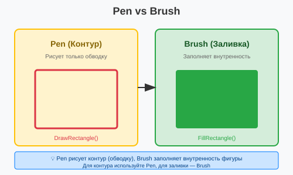
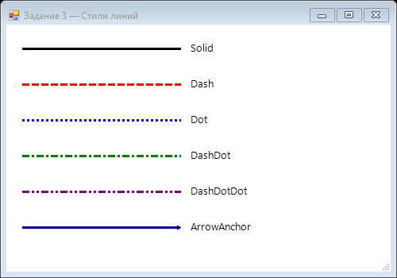

Урок 2.3: Перья (Pen) и линии
📌 Ключевые моменты этого урока:
- Pen — это объект для рисования КОНТУРОВ фигур и линий
- Brush — для ЗАЛИВКИ областей (будет в следующем уроке)
- Pen имеет свойства: Color, Width, DashStyle, StartCap, EndCap
- DashStyle контролирует стиль линии: сплошная, пунктир, точки и т.д.
- DrawLine рисует одну линию, DrawLines — несколько подряд
- Есть готовые объекты Pens (Pens.Red, Pens.Black и т.д.)
Работа с Pen в Visual Studio
Pen — это объект для рисования контуров. В Visual Studio вы можете использовать IntelliSense для изучения всех свойств Pen.
Создание Pen с помощью IntelliSense:
В обработчике Paint:
private void Form1_Paint(object sender, PaintEventArgs e)
{
Graphics g = e.Graphics;
// Напишите "new Pen(" и увидите подсказку
// Visual Studio покажет доступные конструкторы:
// 1. new Pen(Color)
// 2. new Pen(Brush)
// 3. new Pen(Color, float)
Pen pen = new Pen(Color.Red, 2);
// После "pen." увидите все свойства
pen. ← Нажмите точку:
┌──────────────────────────────────┐
│ Pen │
│ ▼ │
│ • Alignment │
│ • Brush │
│ • Color │
│ • DashCap │
│ • DashOffset │
│ • DashPattern │
│ • DashStyle │
│ • EndCap │
│ • LineJoin │
│ • PenType │
│ • StartCap │
│ • Transform │
│ • Width │
└──────────────────────────────────┘
}Использование предопределенных Pens:
В Visual Studio IntelliSense покажет все готовые Pens:
Напишите "Pens." и увидите список:
Pens. ← Нажмите точку:
┌──────────────────────────────────┐
│ Pens │
│ ▼ │
│ • AliceBlue │
│ • AntiqueWhite │
│ • Aqua │
│ • Aquamarine │
│ • Azure │
│ • Beige │
│ • Bisque │
│ • Black │
│ • BlanchedAlmond │
│ • Blue │
│ • BlueViolet │
│ • Brown │
│ • BurlyWood │
│ • CadetBlue │
│ • ... │
└──────────────────────────────────┘
Эти Pens уже созданы, имеют толщину 1px и не требуют Dispose()Pen — инструмент для рисования контуров
Pen — это объект, который определяет, как будет выглядеть КОНТУР (outline) фигур и линий. Не путайте с Brush, который заполняет внутренность!
Визуально:

Разница между Pen (контур) и Brush (заливка)
Создание и использование Pen
Создание нового Pen:
// Самый простой — с цветом
Pen redPen = new Pen(Color.Red);
redPen.Width = 2; // Толщина 2 пикселя
g.DrawLine(redPen, 10, 10, 100, 100);
// Создание с цветом и толщиной сразу
Pen bluePen = new Pen(Color.Blue, 3); // 3 пикселя толщины
g.DrawRectangle(bluePen, 50, 50, 100, 100);Использование готовых Pens (ЭКОНОМИЯ ПАМЯТИ):
В .NET есть предопределенные Pens толщиной 1 пиксель. Они уже готовы к использованию и экономят память:
// Готовые пены (толщина всегда 1 пиксель)
g.DrawLine(Pens.Black, 10, 10, 100, 100);
g.DrawLine(Pens.Red, 20, 20, 150, 150);
g.DrawLine(Pens.Blue, 30, 30, 200, 200);
g.DrawRectangle(Pens.Green, 50, 50, 100, 100);
// Это экономичнее, чем создавать новый Pen каждый раз
// Готовые Pens.Color существуют для большей части стандартных цветовВажно помнить:
- Если создали Pen самостоятельно — вызовите Dispose() когда не нужен
- Готовые Pens (Pens.Red) НЕ нужно Dispose() — это статические объекты
- Лучше переиспользовать Pens, чем создавать по пять для каждого DrawLine
Свойства Pen — как выглядит линия
Color — цвет линии:
Pen pen = new Pen(Color.Red);
pen.Color = Color.Blue; // Меняем цвет
g.DrawLine(pen, 10, 10, 100, 100);
// Цвет с прозрачностью
pen.Color = Color.FromArgb(128, 255, 0, 0); // 50% красный с полупрозрачностью
g.DrawLine(pen, 20, 20, 120, 120);Width — толщина линии (в пикселях):
// Разные толщины
Pen pen1 = new Pen(Color.Black, 1); // Тонкая линия
Pen pen2 = new Pen(Color.Black, 3); // Средняя
Pen pen3 = new Pen(Color.Black, 10); // Толстая
g.DrawLine(pen1, 10, 10, 200, 10); // Тонкая
g.DrawLine(pen2, 10, 30, 200, 30); // Средняя
g.DrawLine(pen3, 10, 50, 200, 50); // ТолстаяDashStyle — стиль линии (сплошная, пунктир и т.д.):
Это самое интересное свойство! Позволяет создавать разныестили линий:
Pen pen = new Pen(Color.Black, 2);
// Стили (все из System.Drawing.Drawing2D)
pen.DashStyle = DashStyle.Solid; // ━━━━━━━━━━ (сплошная)
pen.DashStyle = DashStyle.Dash; // ━ ━ ━ ━ ━ (пунктир)
pen.DashStyle = DashStyle.Dot; // ・・・・・ (точки)
pen.DashStyle = DashStyle.DashDot; // ━ ・ ━ ・ (штрих-точка)
pen.DashStyle = DashStyle.DashDotDot; // ━ ・ ・ ━ (двойной штрих-точка)
// Рисуем с каждым стилем
int y = 20;
foreach (var style in new[] { DashStyle.Solid, DashStyle.Dash, DashStyle.Dot, DashStyle.DashDot })
{
pen.DashStyle = style;
g.DrawLine(pen, 10, y, 300, y);
y += 30;
}Кастомный пунктир (Custom):
// Создаем свой стиль пунктира
Pen pen = new Pen(Color.Black, 2);
pen.DashStyle = DashStyle.Custom;
pen.DashPattern = new float[] { 5, 3, 2, 3 }; // 5 пикселей линия, 3 пробел, 2 линия, 3 пробел
g.DrawLine(pen, 10, 10, 300, 10); // Ваш уникальный пунктирStartCap и EndCap — стиль начала и конца линии:
Управляют, как выглядит начало и конец линии:
using System.Drawing.Drawing2D;
Pen pen = new Pen(Color.Black, 5);
// Стили концов
pen.StartCap = LineCap.Flat; // └ (плоский, по умолчанию)
pen.EndCap = LineCap.Round; // ╶ (круглый)
pen.StartCap = LineCap.Square; // ▁ (квадратный)
pen.EndCap = LineCap.Triangle; // ╲ (треугольник)
pen.EndCap = LineCap.ArrowAnchor; // ◄ (стрелка)
pen.EndCap = LineCap.DiamondAnchor; // ◆ (алмаз)
g.DrawLine(pen, 50, 50, 250, 50);Методы для рисования линий
DrawLine — одна линия:
// By координаты
g.DrawLine(Pens.Black, 10, 10, 100, 100);
// By Point структуры
g.DrawLine(Pens.Blue, new Point(10, 10), new Point(100, 100));
// С Pen с настройками
Pen myPen = new Pen(Color.Red, 3);
g.DrawLine(myPen, 20, 20, 150, 150);
myPen.Dispose();DrawLines — несколько линий подряд:
Рисует ломаную линию через наборе точек (NOT замкнутую, как многоугольник!):
Point[] points = {
new Point(50, 10),
new Point(100, 50),
new Point(150, 20),
new Point(200, 80),
new Point(250, 40),
new Point(300, 100)
};
g.DrawLines(Pens.Black, points); // Линия не замкнута
// Аналог с Brush:
Point[] polygon = {
new Point(50, 100),
new Point(150, 50),
new Point(200, 150),
new Point(100, 180)
};
// Если нужна ЗАМКНУТАЯ линия — используйте DrawPolygon
g.DrawPolygon(Pens.Red, polygon);Практические советы (Best Practices)
- ✅ Используйте готовые Pens.Color для стандартных цветов
- ✅ Вызывайте Dispose() на своих Pen'ах после использования
- 🚫 Не пересоздавайте Pen в циклах — создайте один раз, переиспользуйте
- ✅ Для толстых линий (Width > 3) рассмотрите сглаживание: g.SmoothingMode = SmoothingMode.AntiAlias
- ✅ Проверьте, как выглядит линия с разными DashStyle — может очень улучшить внешний вид
📝 Пример задания
Программа последовательно рисует линии с каждым DashStyle и со стрелочным концом LineCap.ArrowAnchor, подписывая названия рядом:
using System.Drawing;
using System.Drawing.Drawing2D;
using System.Windows.Forms;
namespace CSharpGraphicsApp
{
public class Task03_PenStyles : Form
{
public Task03_PenStyles()
{
Text = "Задание 3 — Стили линий";
Size = new Size(500, 350);
BackColor = Color.White;
DoubleBuffered = true;
Paint += Form1_Paint;
}
private void Form1_Paint(object sender, PaintEventArgs e)
{
Graphics g = e.Graphics;
using (Font font = new Font("Segoe UI", 10))
{
int y = 20;
int dy = 45;
DrawLineWithLabel(g, font, "Solid",
new Pen(Color.Black, 3) { DashStyle = DashStyle.Solid }, ref y, dy);
DrawLineWithLabel(g, font, "Dash",
new Pen(Color.Red, 3) { DashStyle = DashStyle.Dash }, ref y, dy);
DrawLineWithLabel(g, font, "Dot",
new Pen(Color.Blue, 3) { DashStyle = DashStyle.Dot }, ref y, dy);
DrawLineWithLabel(g, font, "DashDot",
new Pen(Color.Green, 3) { DashStyle = DashStyle.DashDot }, ref y, dy);
DrawLineWithLabel(g, font, "DashDotDot",
new Pen(Color.Purple, 3) { DashStyle = DashStyle.DashDotDot }, ref y, dy);
using (Pen arrowPen = new Pen(Color.DarkBlue, 3))
{
arrowPen.EndCap = LineCap.ArrowAnchor;
g.DrawLine(arrowPen, 20, y + 10, 220, y + 10);
g.DrawString("ArrowAnchor", font, Brushes.Black, 230, y);
}
}
}
private void DrawLineWithLabel(Graphics g, Font font, string label,
Pen pen, ref int y, int dy)
{
using (pen)
{
g.DrawLine(pen, 20, y + 10, 220, y + 10);
g.DrawString(label, font, Brushes.Black, 230, y);
}
y += dy;
}
}
}Практическое задание
Задание 1: Использование готовых Pens
- Создайте обработчик события Paint
- Используя IntelliSense, изучите список готовых Pens (напишите "Pens.")
- Нарисуйте линии с разными готовыми Pens:
private void Form1_Paint(object sender, PaintEventArgs e) { Graphics g = e.Graphics; // Используем готовые Pens g.DrawLine(Pens.Black, 10, 10, 300, 10); g.DrawLine(Pens.Red, 10, 30, 300, 30); g.DrawLine(Pens.Blue, 10, 50, 300, 50); g.DrawLine(Pens.Green, 10, 70, 300, 70); } - Запустите приложение и проверьте результат
Задание 2: Создание собственного Pen
- В обработчике Paint создайте свой Pen:
private void Form1_Paint(object sender, PaintEventArgs e) { Graphics g = e.Graphics; // Создаем свой Pen Pen myPen = new Pen(Color.Purple, 3); g.DrawLine(myPen, 10, 100, 300, 100); // Меняем свойства myPen.Color = Color.Orange; myPen.Width = 5; g.DrawLine(myPen, 10, 120, 300, 120); // Освобождаем ресурсы myPen.Dispose(); } - Используйте IntelliSense для изучения свойств Pen (напишите "myPen.")
- Запустите приложение
Задание 3: Стили линий (DashStyle)
- Добавьте using System.Drawing.Drawing2D;
- Нарисуйте линии с разными стилями:
private void Form1_Paint(object sender, PaintEventArgs e) { Graphics g = e.Graphics; Pen pen = new Pen(Color.Black, 2); int y = 150; foreach (DashStyle style in new[] { DashStyle.Solid, DashStyle.Dash, DashStyle.Dot, DashStyle.DashDot, DashStyle.DashDotDot }) { pen.DashStyle = style; g.DrawLine(pen, 10, y, 300, y); y += 30; } pen.Dispose(); } - Запустите приложение и изучите разные стили
Задание 4: Концы линий (LineCap)
- Нарисуйте линии с разными концами:
private void Form1_Paint(object sender, PaintEventArgs e) { Graphics g = e.Graphics; Pen pen = new Pen(Color.Blue, 5); int y = 300; foreach (LineCap cap in new[] { LineCap.Flat, LineCap.Round, LineCap.Square, LineCap.ArrowAnchor }) { pen.StartCap = cap; pen.EndCap = cap; g.DrawLine(pen, 50, y, 250, y); y += 40; } pen.Dispose(); } - Запустите приложение и проверьте результат
Задание 5: DrawLines — ломаная линия
- Создайте массив точек и нарисуйте ломаную:
private void Form1_Paint(object sender, PaintEventArgs e) { Graphics g = e.Graphics; // Создаем массив точек Point[] points = { new Point(50, 400), new Point(100, 350), new Point(150, 380), new Point(200, 320), new Point(250, 360), new Point(300, 300) }; // Рисуем ломаную линию g.DrawLines(Pens.Red, points); // Рисуем точки для наглядности foreach (Point p in points) { g.FillEllipse(Brushes.Blue, p.X - 3, p.Y - 3, 6, 6); } } - Запустите приложение
Задание по аналогии с примером: Витрина стилей линий
По аналогии с Task03_PenStyles создайте форму, которая отображает все основные стили линий в виде каталога.
- Создайте форму 500×350 с
DoubleBuffered = true. - Нарисуйте 5 горизонтальных линий — по одной для каждого
DashStyle:Solid,Dash,Dot,DashDot,DashDotDot. Используйте разные цвета и толщину 3px. - Рядом с каждой линией выведите её название через
g.DrawString. - Добавьте линию с
EndCap = LineCap.ArrowAnchorв конце списка. - Вынесите рисование одной строки в отдельный вспомогательный метод
DrawLineWithLabel(), чтобы не дублировать код.
Пример результата выполнения задания:

Скриншот программы (Task03)
Pen в вспомогательный метод и оборачивайте его в using внутри метода, чтобы ресурсы освобождались сразу.
Проверка знаний
Ответьте на вопросы, чтобы проверить, насколько хорошо вы усвоили материал: